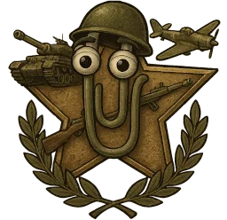

mesh
Models
Maps
Poses
Kits
extracted levels · terrain, lightmaps and sky
Search name, faction, map…
/
Maps
FAST
Tap for slow
FLY
Tap for pan
Reset
WASD fly · QE or scroll vertical · mouse look · Shift slow · M map · Esc
Tap or click to fly
map